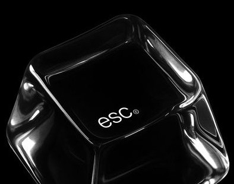

La mejor aplicación de habitos, es DONE.
Con DONE puedes construir tu propio sistema de HABITOS de forma clara y efectiva. Organiza tus rutinas, mantén el enfoque y alcanza tus metas con una herramienta diseñada para ayudarte a tomar el control de tu día. Empieza hoy.
